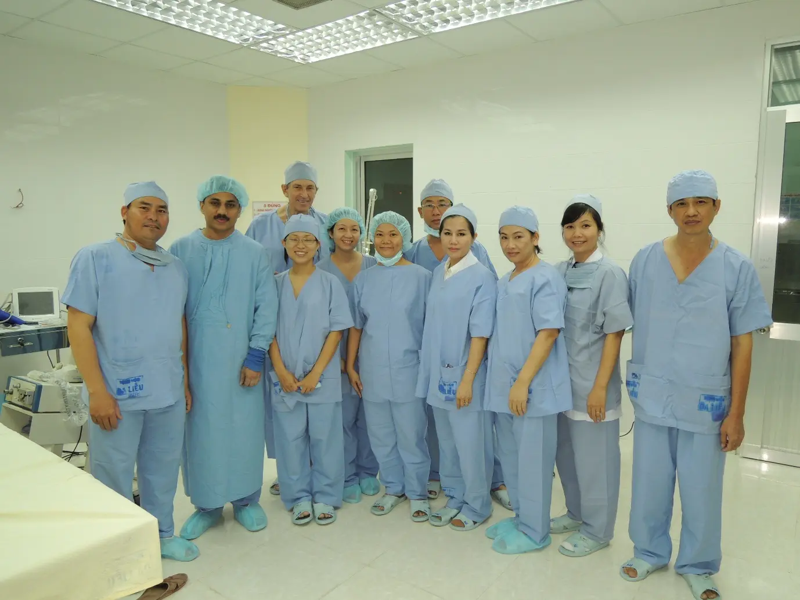
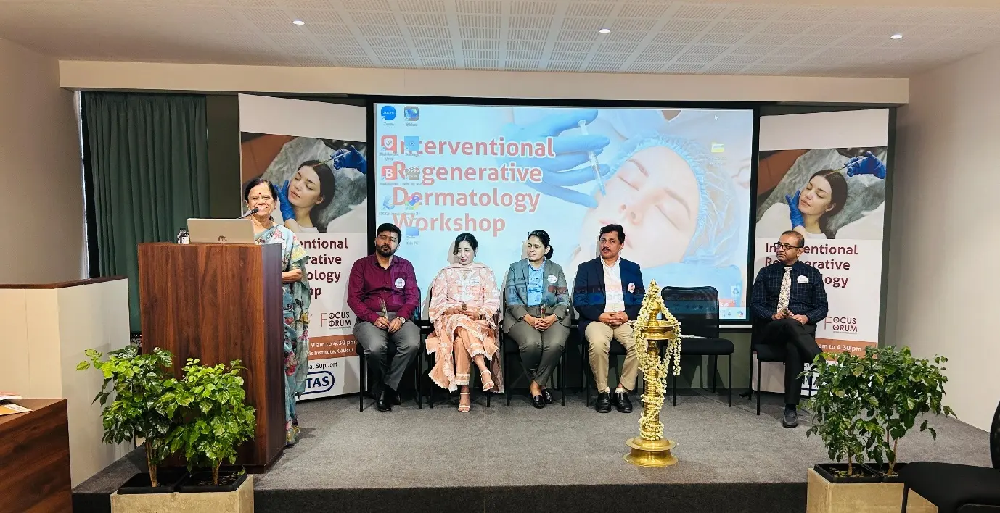
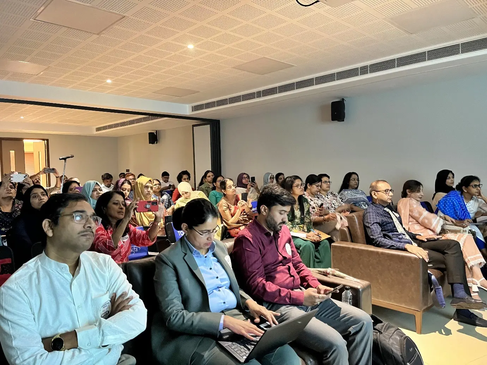
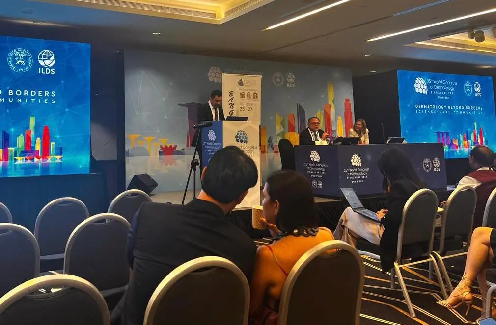
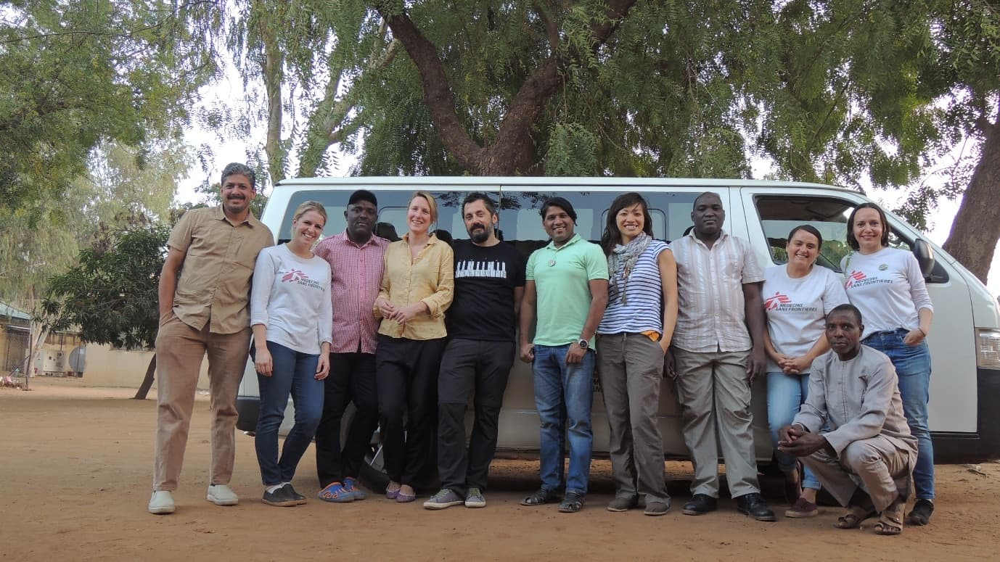

Indexed Research Papers
Consultants at Cutis have published more than thirty indexed papers with recognized national and international impact.
Cutis Institute in Calicut extends its commitment beyond patient care into dermatology research, clinical education, and advanced procedural training. The goal is not only to deliver world-class dermatological services, but also to shape the future of the field through evidence, teaching, and mentorship.

Consultants at Cutis have published more than thirty indexed papers with recognized national and international impact.
Our faculty have delivered hundreds of talks at prestigious scientific forums and academic institutions worldwide.
Workshops and continuing medical education programs keep qualified dermatologists updated with evolving techniques.
Our consultants contribute to treatment guidelines, consensus building, and meaningful knowledge-sharing across specialties.
Cutis Institute stands as a value-driven center of excellence in dermatology, built around both service and scholarship. Alongside clinical, surgical, and aesthetic care, the institute actively contributes to dermatological research and professional education so that each innovation is grounded in real patient outcomes.
Academy @ Cutis Institute is designed for qualified dermatologists seeking to deepen their procedural expertise in a structured environment. The learning model combines strong academic foundations with direct exposure to modern dermatology practice, creating a balanced pathway between theory and hands-on clinical insight.
The training ecosystem at Cutis blends surgical exposure, scientific exchange, workshop participation, and academic gathering spaces. These moments reflect the institute's role as both a treatment center and a serious learning environment for modern dermatology.




With state-of-the-art facilities and internationally respected dermatologists, Cutis Institute offers a strong learning environment for those who want to study modern procedural dermatology within a real, high-volume clinical setup. The emphasis is on meaningful exposure, disciplined technique, and relevance to contemporary dermatological practice.
For practitioners seeking a place where education is supported by academic credibility, active research, and high clinical standards, Cutis offers a framework that is rigorous, current, and deeply connected to real-world dermatology.
Connect with the institute to learn more about upcoming workshops, educational programs, and professional learning opportunities in dermatology and aesthetic medicine.
Talk to Cutis Institute